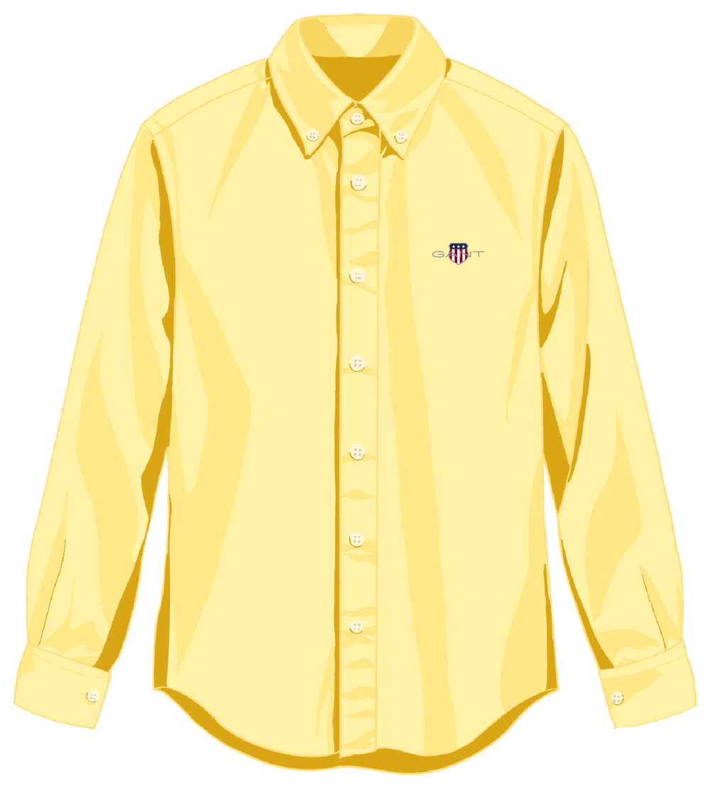

05 / Shop the story
The Oxford
here and now.
THE GANT OXFORD
Made to be
worn your way.
The butter yellow Oxford shirt at the heart of this story. Explore the details, then discover the GANT collection.
